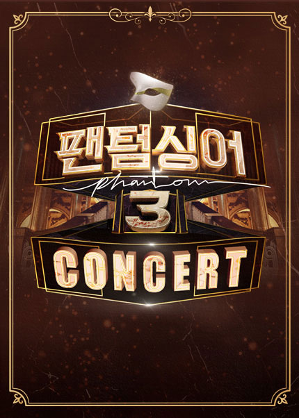

118
- 등급
- 8세이상
- 관람시간
- 110분
- 출연
- 라포엠
- 가격
-
R석121,000원
S석110,000원
- 공연시간안내
-
"2020년 8월 29일(토) 오후 6시"
"2020년 8월 20일(일) 오후 5시" - 배송정보
- 본 상품은 일괄배송 상품으로 2020년 08월 10일부터 순차 배송됩니다.
무대 배경이 되는 프로이트의 서재의 디테일에 놀랐습니다.엔틱하고 다양한 종교상들이 옹기종기~~ 서로의 이야기에 조금씩 공감하는 부분은 있지만 결국 둘은 자신의 소신을 지키는 걸로~~ 작년 ‘에쿠우스’에서 받은 느낌이 강렬해 이석준 배우님 연기도 보고 싶네요. 다른 페어는 어떨까 궁금해지는 공연입니다.
무대 배경이 되는 프로이트의 서재의 디테일에 놀랐습니다.엔틱하고 다양한 종교상들이 옹기종기~~ 서로의 이야기에 조금씩 공감하는 부분은 있지만 결국 둘은 자신의 소신을 지키는 걸로~~ 작년 ‘에쿠우스’에서 받은 느낌이 강렬해 이석준 배우님 연기도 보고 싶네요. 다른 페어는 어떨까 궁금해지는 공연입니다.
무대 배경이 되는 프로이트의 서재의 디테일에 놀랐습니다.엔틱하고 다양한 종교상들이 옹기종기~~ 서로의 이야기에 조금씩 공감하는 부분은 있지만 결국 둘은 자신의 소신을 지키는 걸로~~ 작년 ‘에쿠우스’에서 받은 느낌이 강렬해 이석준 배우님 연기도 보고 싶네요. 다른 페어는 어떨까 궁금해지는 공연입니다.
무대 배경이 되는 프로이트의 서재의 디테일에 놀랐습니다.엔틱하고 다양한 종교상들이 옹기종기~~ 서로의 이야기에 조금씩 공감하는 부분은 있지만 결국 둘은 자신의 소신을 지키는 걸로~~ 작년 ‘에쿠우스’에서 받은 느낌이 강렬해 이석준 배우님 연기도 보고 싶네요. 다른 페어는 어떨까 궁금해지는 공연입니다.
무대 배경이 되는 프로이트의 서재의 디테일에 놀랐습니다.엔틱하고 다양한 종교상들이 옹기종기~~ 서로의 이야기에 조금씩 공감하는 부분은 있지만 결국 둘은 자신의 소신을 지키는 걸로~~ 작년 ‘에쿠우스’에서 받은 느낌이 강렬해 이석준 배우님 연기도 보고 싶네요. 다른 페어는 어떨까 궁금해지는 공연입니다.
무대 배경이 되는 프로이트의 서재의 디테일에 놀랐습니다.엔틱하고 다양한 종교상들이 옹기종기~~ 서로의 이야기에 조금씩 공감하는 부분은 있지만 결국 둘은 자신의 소신을 지키는 걸로~~ 작년 ‘에쿠우스’에서 받은 느낌이 강렬해 이석준 배우님 연기도 보고 싶네요. 다른 페어는 어떨까 궁금해지는 공연입니다.
무대 배경이 되는 프로이트의 서재의 디테일에 놀랐습니다.엔틱하고 다양한 종교상들이 옹기종기~~ 서로의 이야기에 조금씩 공감하는 부분은 있지만 결국 둘은 자신의 소신을 지키는 걸로~~ 작년 ‘에쿠우스’에서 받은 느낌이 강렬해 이석준 배우님 연기도 보고 싶네요. 다른 페어는 어떨까 궁금해지는 공연입니다.
무대 배경이 되는 프로이트의 서재의 디테일에 놀랐습니다.엔틱하고 다양한 종교상들이 옹기종기~~ 서로의 이야기에 조금씩 공감하는 부분은 있지만 결국 둘은 자신의 소신을 지키는 걸로~~ 작년 ‘에쿠우스’에서 받은 느낌이 강렬해 이석준 배우님 연기도 보고 싶네요. 다른 페어는 어떨까 궁금해지는 공연입니다.